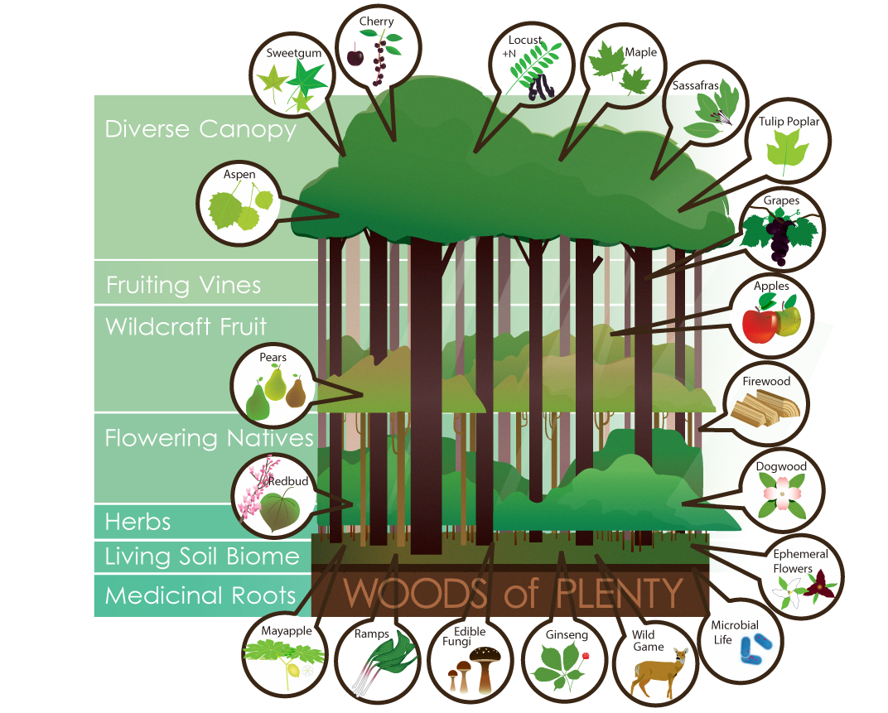

Life and productivity

Forests are already incredibly productive. With the stability that native plants establish, a richer ecosystem will take hold. The forest cycling nutrients successfully means that you will never have to fertilize. Thriving fungal networks and microorganisms in the soil increase the bioavailablility of nutrients and minerals for plants.
For woodland owners, non-timber forest products provide a stable income opportunity. The initial investment is mostly in labor, losses are low, and the returns can be regular and substantial.

For woodland owners, non-timber forest products provide a stable income opportunity. The initial investment is mostly in labor, losses are low, and the returns can be regular and substantial.
Firewood
An economical means to heat your home, water and cook food. Especially if you utilize a rocket mass heater!Mushrooms
Fungi play an important role cycling nutrients and are an indicator of a healthy forest. These sought after gourmet treats are highly nutritious. A forest is a great place to cultivate mushrooms or one can forage for numerous wild crafted mushrooms including morel, chanterelle and chicken of the woods (pictured here).Natural beekeeping
With flowers in bloom throughout the season, the forest is an ideal place for beekeeping. Increased pollination in your forest results in more fruits, nuts, and seed for regeneration.We build beeboxes and the necessary protection.